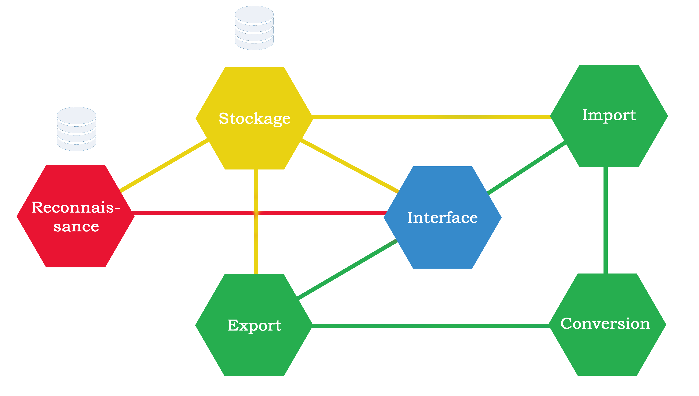

Taliesin est une application web multi-utilisateurs. Afin de pouvoir gérer une forte charge liée à un
grand nombre d'utilisateurs simultanés, l'application a été conçue avec une architecture en
microservices.
Cela signifie que l'application est découpée en plusieurs sous-blocs fonctionnels et indépendants les
uns des autres. Chaque bloc est donc chargé d'une fonctionnalité en particulier dans l'application.
Dans notre cas, Taliesin est décomposé en 6 microservices (représentés par des hexagones sur le schéma).

Chaque microservice se voit attribuer un rôle spécifique, représenté par une fonctionnalité principale.
Les liens entre microservices mettent en évidence les échanges de données entre eux et les appels
entre microservices. Les différents blocs sont présentés ci-dessous.
Au centre on trouve l'interface, qui correspond à la page web
sur laquelle l'utilisateur navigue
Le microservice de stockage fait l'interface avec la base de
données de l'application.
Le microservice d'import gère l'ajout d'images dans la base
de données.
Le microservice d'export à l'inverse permet à l'utilisateur
d'exporter la base finale une fois toutes les images annotées.
La conversion intervient au moment de l'import et de l'export
afin de transformer les données vers et depuis un format interne à l'application.
La partie reconnaissance gère le reconnaisseur automatique
utilisé dans l'application pour faire des suggestions au cours de l'annotation.
Cette architecture est couplée aux technologies
Kubernetes et
Docker.
Kubernetes est un orchestrateur qui se charge d'exécuter simultanément tous les blocs de l'application,
la rendant opérationnelle.
Chacun des microservices de Taliesin est encapsulé dans un conteneur Docker. Ces conteneurs sont
une surcouche aux microservices qui permet à Kubernetes de les gérer de manière indépendante.
Il est ainsi possible d'exécuter plusieurs fois un bloc de l'application, et de répartir les demandes
des utilisateurs entre les différentes copies du microservice.
Grâce à cette organisation, Kubernetes crée suffisamment de copies des microservices de manière
à supporter la charge, ce qui rend l'application accessible à un grand nombre d'utilisateurs.